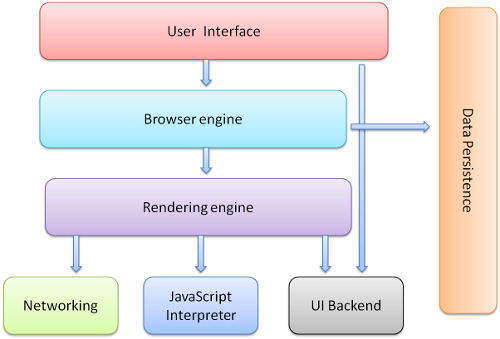
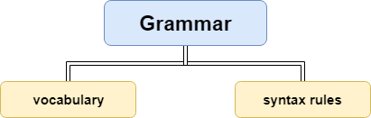
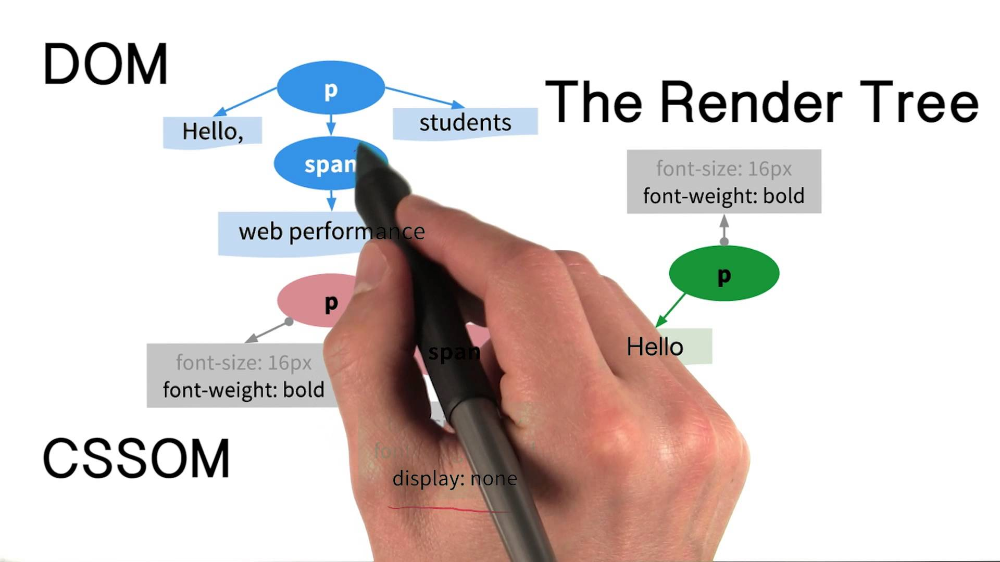

HOW BROWSERS WORK

Created by Volha Yasinskaya
Agenda
- Browser Structure
- Rendering Engine
- Parsing Process
- Render Tree
- Layout
- Paint
- Summary
Browser Stucture
Source: http://taligarsiel.com/Projects/howbrowserswork1.htm
Rendering Engine
Browser Rendering Engines
| Browser | Rendering Engine |
|---|---|
|
|
WebKit |
|
|
Blink |
| Blink | |
|
|
Gecko |
| EdgeHTML |
Parsing Process
Parsing - translating a document into a structure that code can use.
HTML Parsing
HTML’s lexicon consists of 6 tokens:
- DOCTYPE
- Start Tag
- End Tag
- Comment
- Character
- End-of-file
<!DOCTYPE html>
<html lang="en-US">
<head>
<meta charset="UTF-8">
<meta name="author" content="Volha Yasinskaya">
</head>
<body>
<p>
This is text in a paragraph.
<img src="img/test.jpg">
</p>
<div>
This is text in a div.
</body>
</html>Parsers
- Flex
- Lex
- Yacc
- Bison
Webkit uses Flex (lexer) and Bison (parser)
Render Tree
Render Tree holds visual nodes (i.e. things that will actually appear on the page)
Layout
Dirty Bit System
It is a system that makes sure that browsers don't need to do the full layout on every interaction.
GLOBAL LAYOUT
Global layout is required when changes affect all render objects, e.g.:
- A global style change, like changing all font-family or font-size values
- Resizing the screen
Paint
Render tree is being traversed and the paint() method is used to display content on the page.
GLOBAL & LOCAL PAINTING
Similar to the rendering process, painting can either be global or local. Regions of the content are flagged as dirty to enable local paints. Then, the rendering engine invokes the UI Backend component of the browser to actually repaint the dirty regions.
THE PAINTING ORDER
Render objects have many layers on the z-axis. Their painting order (from back to front) is:
- Background Color
- Background Image
- Border
- Children Render Objects
- Outline
Summary
Browser Stucture
Source: http://taligarsiel.com/Projects/howbrowserswork1.htm